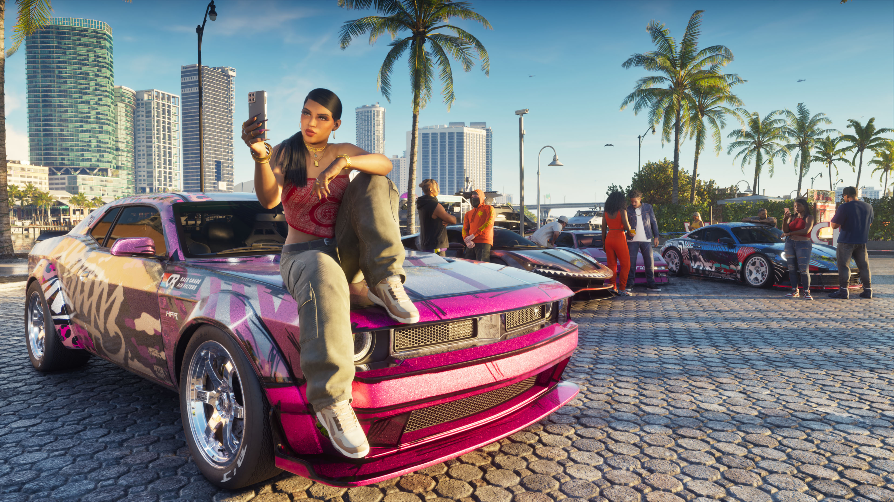
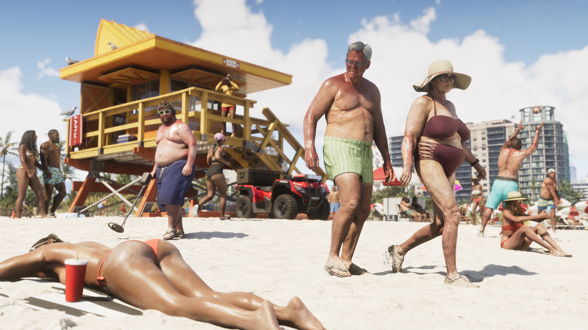
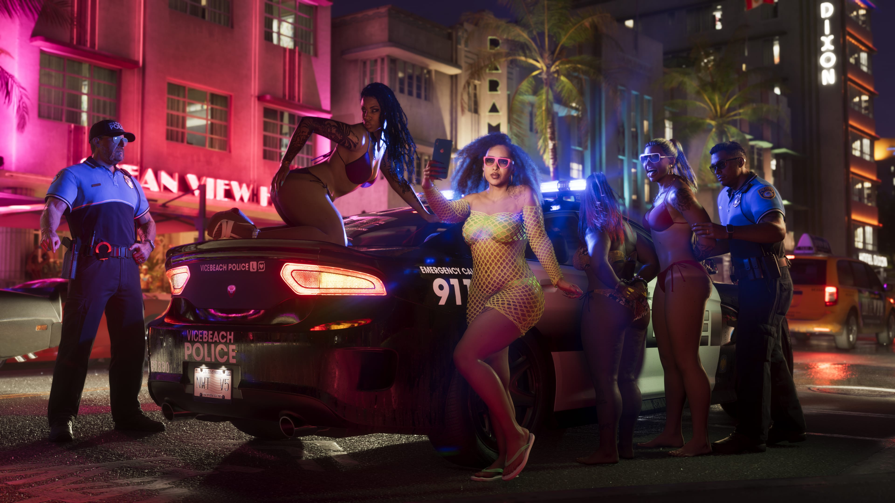
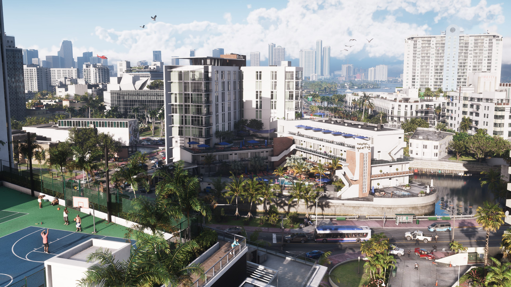

El cartel que
lo dice todo.
No todas las ciudades necesitan un castillo o una catedral para tener un símbolo reconocible. En Vice City, la enorme instalación de letras que forma el nombre de la ciudad parece dar la bienvenida a quienes llegan. Una de las capturas oficiales de Grand Theft Auto VI muestra este cartel monumental iluminado, rodeado de palmeras y bajo un cielo atravesado por un avión. Su tamaño y su iluminación hacen que destaque como un auténtico icono urbano dentro del mundo ficticio del videojuego.

Mucho más
que unas letras.
Un diseño pensado para impresionar
El monumento utiliza letras gigantes, volumen tridimensional e iluminación artificial para convertir el nombre de la ciudad en parte del paisaje. En la captura se aprecia una composición llamativa que encaja con la personalidad de Vice City: luces intensas, edificios modernos y una estética espectacular. Aunque se trata de un lugar ficticio, cumple la misma función que muchos monumentos reales: ofrecer una imagen fácil de reconocer y convertirse en un punto de referencia para sus visitantes.
Una ciudad con identidad propia
El entorno del cartel forma parte de una ciudad llena de contrastes. Las imágenes oficiales de GTA VI enseñan playas soleadas, avenidas con palmeras, rascacielos junto al agua y calles iluminadas por neones. Todo ello crea una identidad visual muy marcada, en la que la arquitectura y el ambiente costero son tan importantes como las personas. Vice City no es un lugar real, pero sus escenarios están diseñados para resultar creíbles y recordar a una gran ciudad estadounidense frente al océano.
Ficha del lugar.
URBAN ARCHIVE
| CARACTERÍSTICA | INFORMACIÓN |
|---|---|
| Monumento | Letrero gigante de bienvenida «Vice City» |
| Tipo | Instalación monumental de letras |
| Ubicación | Vice City, ciudad ficticia de Grand Theft Auto VI |
| Entorno | Zona urbana con palmeras e iluminación ornamental |
| Inspiración de la ciudad | Miami y Miami Beach, Florida (Estados Unidos) |
| Fuente gráfica | Capturas oficiales publicadas por Rockstar Games |
Postales de Vice City.



Del videojuego
a la realidad.
Vice City es una ciudad inventada, por lo que su monumento no tiene unas coordenadas reales que puedan consultarse en Google Maps. Sin embargo, su ambiente costero y muchos de sus elementos arquitectónicos están inspirados en Miami, especialmente en el entorno de Miami Beach. Por eso, el siguiente enlace señala la zona histórica Art Decó de Miami Beach como referencia del estilo urbano que recuerda a Vice City. Es una comparación visual, no la ubicación real del cartel del videojuego.
VER REFERENCIA EN GOOGLE MAPS